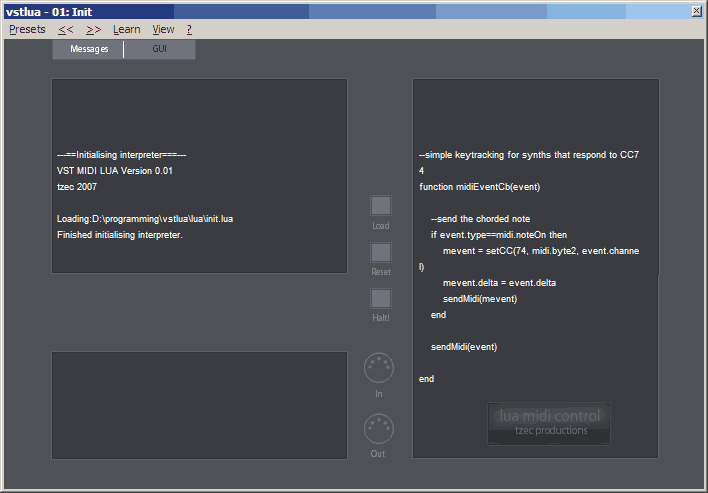
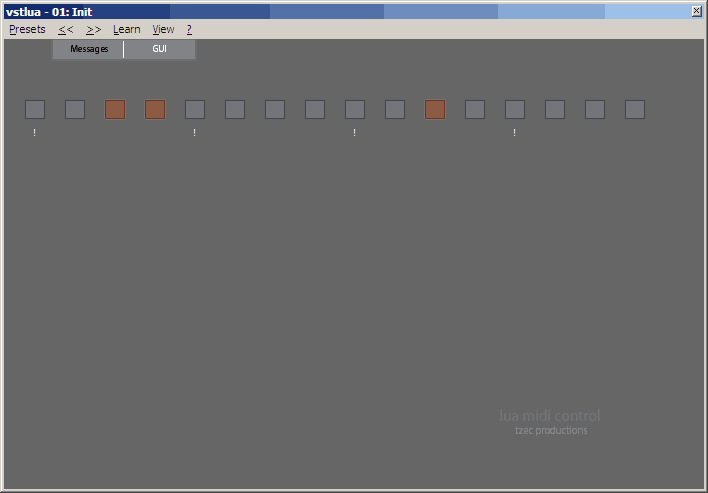

Vst Lua
Email: johnhw@gmailWASP.com minus the insect

The main GUI

A custom GUI in action (simple drum machine).
FAQ:
- What does VstLua do?
- It allows simple scripting of MIDI events in a VST. It does not have any audio manipulation facilities. It is purely for MIDI control.
- And why is that useful?
- It replaces many custom VST MIDI manipulators with a quick and easy way of scripting MIDI events. It provides support
for limited GUI creation, so that scripts can set up their own control panels. New scripts can be quickly rapid
prototyped without restarting the host.
- For example?
- Say, for example, I want add a new note, a fifth above the original, if the note is below middle C. All that is needed is a script like:
function midiEventCb(midiEvent)
if midiEvent.type==midi.noteOn or midiEvent.type==midi.noteOff then
local note = midiEvent.byte2
-- decide whether to transpose it up or down
if note>=noteToNumber('C-5') then
note = midiEvent.byte2 + interval.fifth
else
note = note - interval.fifth
end
midiEvent.byte2=note
end
sendMidi(midiEvent)
end
See the API for details.
- What license is it under?
VstLua is released under a BSD license (as is Lua itself). The source code is provided.
- Copyright (c) 2007, John Williamson
- All rights reserved.
- Redistribution and use in source and binary forms, with or without
- modification, are permitted provided that the following conditions are met:
-
Redistributions of source code must retain the above copyright
- notice, this list of conditions and the following disclaimer.
- * Redistributions in binary form must reproduce the above copyright
- notice, this list of conditions and the following disclaimer in the
- documentation and/or other materials provided with the distribution.
- * Neither the name of the <organization> nor the
- names of its contributors may be used to endorse or promote products
- derived from this software without specific prior written permission.
- THIS SOFTWARE IS PROVIDED BY <copyright holder> ``AS IS'' AND ANY
- EXPRESS OR IMPLIED WARRANTIES, INCLUDING, BUT NOT LIMITED TO, THE IMPLIED
- WARRANTIES OF MERCHANTABILITY AND FITNESS FOR A PARTICULAR PURPOSE ARE
- DISCLAIMED. IN NO EVENT SHALL <copyright holder> BE LIABLE FOR ANY
- DIRECT, INDIRECT, INCIDENTAL, SPECIAL, EXEMPLARY, OR CONSEQUENTIAL DAMAGES
- (INCLUDING, BUT NOT LIMITED TO, PROCUREMENT OF SUBSTITUTE GOODS OR SERVICES;
- LOSS OF USE, DATA, OR PROFITS; OR BUSINESS INTERRUPTION) HOWEVER CAUSED AND
- ON ANY THEORY OF LIABILITY, WHETHER IN CONTRACT, STRICT LIABILITY, OR TORT
- (INCLUDING NEGLIGENCE OR OTHERWISE) ARISING IN ANY WAY OUT OF THE USE OF THIS
- SOFTWARE, EVEN IF ADVISED OF THE POSSIBILITY OF SUCH DAMAGE.
*
- Why aren't there many scripts?
- Because you haven't written them yet! If you write a useful script, please send it to me so
I can include it the next release.
- Why Lua? Why not Python/Ruby/Java/Lisp...?
- Lua is comparitively very efficient.
- Lua is very lightweight. Nobody wants to deal with setting up Java just to get a plugin to work. Lua just compiles in nicely.
- Lua has a very simple syntax.
- It would be really nice if GUI control XXX was added!
- If you have a good idea of how a new GUI control could be used, let me know. However, it's a lot
of work to a add new control, so it might not happen...
- Uhh, the GUI controls all reset to their original values when I close the VST window.
- That's supposed to happen. If you want the values to persist, copy them to and from the
VSTParameters. See scripts/drummachine.lua for an example.
- It crashes my host!
- Well, it's a beta, and there are probably lots of bugs. Please send me details of (a) which host you are using and
(b) which script you were using and (c) what exactly happens.
DOWNLOAD IT